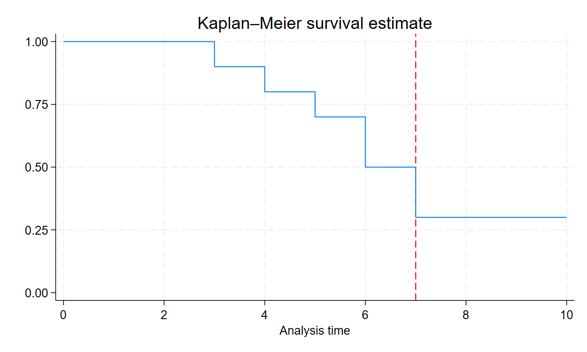

Code
library(tibble)
library(dplyr)
library(haven)
library(pander)library(tibble)
library(dplyr)
library(haven)
library(pander)Think about a hypothetical event: e.g. birth, death, partnering, marriage or commitment to a partner, entering a program, leaving a program, attaining a degree, first diagnosis of anxiety or depression, etc.
set.seed(2779) # random seed
N <- 10 # sample size
T <- 10 # number of timepoints
id <- rep(seq(1, N), each = T) # id's 1 to N
x <- rep(rbinom(N, 1, .5), each = T) # random time invariant covariate
t <- rep(seq(1, T), N) # timepoints 1 to T
# random event times
# uniform event times
event_time <- rep(round(runif(N, 3, T),
digits = 0),
each = T)
event <- t >= event_time # event has occurred t >= event_time
event <- factor(event,
levels = c(FALSE, TRUE),
labels = c("No Event", "Event"))
# arbitrarily censored after 7
censored <- event_time > 7
censored <- factor(censored,
levels = c(FALSE, TRUE),
labels = c("Not Censored", "Censored"))
# tibble
# data required for animation
mydata <- tibble::tibble(id, x, t, event_time, event, censored)
mydata2 <- mydata %>%
filter(t == 1) %>%
select(id, x, event_time, censored)
mydata3 <- mydata %>%
filter(t <= event_time)write_dta(mydata3, "event-history-multiple-records.dta")
write_dta(mydata2, "event-history-single-record.dta")library(ggplot2)
library(plotly)Individuals in the animation below who have not yet experienced an event are indicated by a ●.
When an event occurs for an individual, the symbol changes to a ✕.
In this simulation, we imagine that the study period ends after time 7, so observations for which the event occurs after time 7 are considered to be censored: i.e. a failure is not observed.
Censored observations (failure not observed) are maize ⬤, and non-censored observations (failure observed) are blue ⬤.1
pal <- c("#00274C", "#FFCB05") # color palette
p2 <- plot_ly(data = mydata, # use mydata
x = ~t, # x is t (time)
y = ~id, # y is id
frame = ~t, # frames based on t (time)
text = ~paste("Event:" ,
event,
"<br>Censored:",
censored),
type = 'scatter',
mode = 'marker',
color = ~censored, # color is censored (yes / no)
colors = pal, # use color palette
symbol = ~as.numeric(event), # symbol is event (occurred / not occurred)
symbols = c('circle', # event not occurred
'x'), # event
marker = list(size = 15)) %>% # marker size
layout(title = 'Hypothetical Timing of Events \nCensored at Time 7',
shapes = list(type='line', # censoring line
x0 = 7,
x1 = 7,
y0 = 0,
y1 = 10,
line=list(dash='dot',
width=1,
color = "red"))) %>%
animation_opts(3000)
p2 # replayThe general format for the stset command is stset t, failure(f). Here t is the time variable, and f is an indicator of failure, i.e. the event of interest happened before the study concluded.
use "event-history-single-record.dta"
stset event_time, failure(censored == 1) // set event time and failvar
sts graph, xline(7, lcolor("red")) // survival curve w line at 7
graph export survival.png, replaceSurvival-time data settings
Failure event: censored==1
Observed time interval: (0, event_time]
Exit on or before: failure
--------------------------------------------------------------------------
10 total observations
0 exclusions
--------------------------------------------------------------------------
10 observations remaining, representing
7 failures in single-record/single-failure data
65 total analysis time at risk and under observation
At risk from t = 0
Earliest observed entry t = 0
Last observed exit t = 10
Failure _d: censored==1
Analysis time _t: event_time
file
/Users/agrogan/Desktop/GitHub/newstuff/categorical/survival-analysis-and-event-hi
> story/survival.png saved as PNG format
library(DT)datatable(mydata2,
extensions = 'Buttons',
options = list(
dom = 'Bfrtip',
buttons = c('copy', 'csv', 'excel')),
caption = "Simple Event History Data")Notice how every row in this particular data set is a person timepoint, not simply a person. Every person in this data has multiple rows.
datatable(mydata3,
extensions = 'Buttons',
options = list(
dom = 'Bfrtip',
buttons = c('copy', 'csv', 'excel')),
caption = "Data in Multiple Record Form")Note that the language of survival analysis comes from medical studies of time until death, and engineering studies of mechanical failure. So surviving refers to surviving until the event of interest occurs, and failure means that the event of interest is observed during the study period. Censored means that the event of interest is not observed during the study period.↩︎